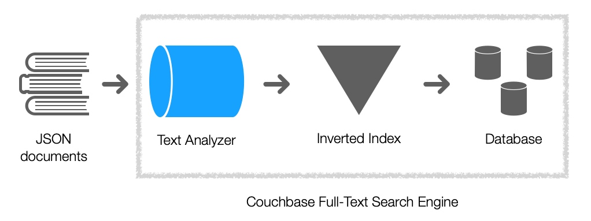
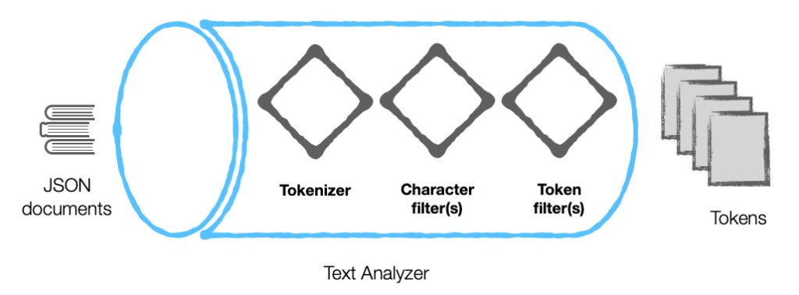
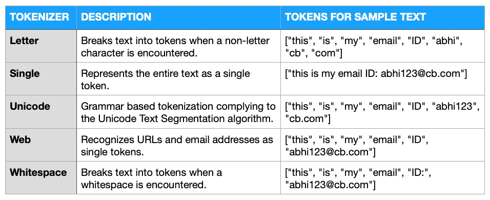
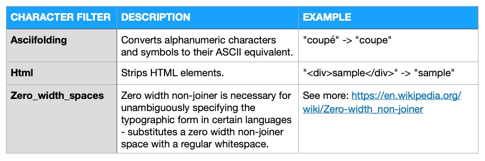
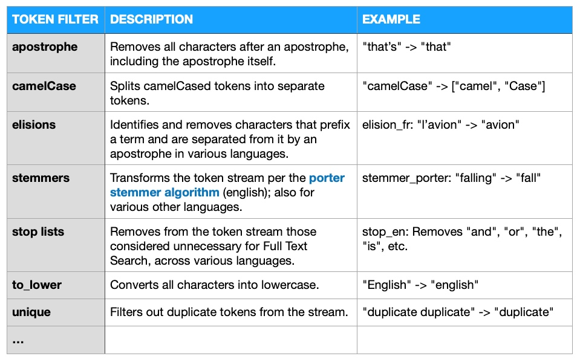
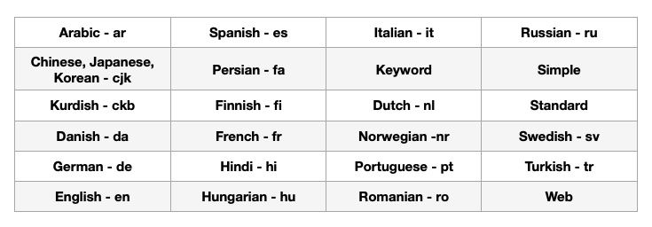

全文搜索引擎库（Bleve）学习实践

目录
Bleve is an open-sourced text indexing and search library implemented in Go, developed in-house at Couchbase.
You’ve probably heard of the most well-known Full-Text Search engine: Lucene with Elasticsearch built on top of it. Couchbase’s Full-Text Search (FTS) Engine is powered by Bleve, and this article will showcase the various ways to analyze text within this engine.
简介
Bleve 是一个由 Couchbase 团队基于 Go 语言开发的索引 / 检索库，它支持常用的检索和索引功能，如索引、检索、过滤、排序、聚合、高亮等。Bleve 包括常见的文本分析组件，且能够使用现有的 K/V 存储系统进行存储。
Bleve 具有以下主要特性：
- 支持所有 Go 数据结构的索引，如 JSON 、结构体、Slices、字符串等
- 具有强大、智能的配置功能
- 具有丰富的 Field 类型，如文本、数字、日期等
- 具有丰富查询类型，如 Term、短语、模糊 / 精确匹配、前缀、逻辑与（Conjunction）、逻辑或（Disjunction）、布尔（Boolean）、数字范围、日期范围等查询
- 具有简单的查询语法，且能够实现复杂的查询
- 具有丰富的接口，且能够实现功能扩展
- 具有易用且高级 API 能够索引数据模型中的任何对象
- 基于标准的 TF-IDF 加权评分算法
- 支持查询匹配结果的高亮显示
- 支持多种聚合功能 (Facet)，如能够根据 Term、数字范围、日期范围聚合等
- 文本解析组件现已支持众多分析组件，支持将近二十种语言，如丹麦语、荷兰语、英国、法语、德语、泰语、土耳其语等
原理分析
Bleve 搜索引擎的工作原理如下图：

With Couchbase’s Full-Text Search engine, the analyzers and all their components work on text that constitutes field values within JSON documents. They do not work on field names. （注意：JSON文本分析，仅针对JSON对象的value，不对key进行分析）
Text Analyzer 组成
An analyzer transforms input Text into a Token Stream. Analyzers are composed of one or more constituent pieces to form a pipeline. The pipe consists of zero or more Character Filters, followed by a single Tokenizer, followed by zero or more Token Filters. The input Text is run through this pipeline to produce the resulting Token Stream. 一个文本分析器有若干个组件构成，形成了一个管道。这个管道中，依次包括0或多个符号过滤器，一个分词器，0个或多个令牌过滤器。文本经过该管道的处理后，生成了一个令牌流。

Tokenizer (分词器）
A tokenizer is the first component to which the documents are subjected to. As the name suggests, it breaks the raw text into a list of tokens. This conversion will depend on a rule-set defined for the tokenizer. 包括如下分词器：

Character Filter（符号过滤器）
Character filters are to remove or replace undesirable characters.

Token Filter（令牌过滤器）
Token filters accept a token stream provided by a tokenizer and make modifications to the tokens in the stream.

Language (支持的语言）

注意：可以采用以上多个组件对文本进行分析，通过配置组件的顺序，可以获得不同的分析结果。
中文处理插件
package bleve_jieba
import (
"errors"
"github.com/blevesearch/bleve/v2/analysis"
"github.com/blevesearch/bleve/v2/mapping"
"github.com/blevesearch/bleve/v2/registry"
"github.com/yanyiwu/gojieba"
)
func init() {
registry.RegisterAnalyzer("gojieba", analyzerConstructor)
registry.RegisterTokenizer("gojieba", tokenizerConstructor)
}
type JiebaAnalyzer struct {
}
func analyzerConstructor(config map[string]interface{}, cache *registry.Cache) (*analysis.Analyzer, error) {
tokenizerName, ok := config["tokenizer"].(string)
if !ok {
return nil, errors.New("must specify tokenizer")
}
tokenizer, err := cache.TokenizerNamed(tokenizerName)
if err != nil {
return nil, err
}
alz := &analysis.Analyzer{
Tokenizer: tokenizer,
}
return alz, nil
}
type JiebaTokenizer struct {
handle *gojieba.Jieba
}
func NewJiebaTokenizer(dictpath, hmmpath, userdictpath, idf, stop_words string) *JiebaTokenizer {
x := gojieba.NewJieba(dictpath, hmmpath, userdictpath, idf, stop_words)
return &JiebaTokenizer{x}
}
func (x *JiebaTokenizer) Free() {
x.handle.Free()
}
func (x *JiebaTokenizer) Tokenize(sentence []byte) analysis.TokenStream {
result := make(analysis.TokenStream, 0)
pos := 1
words := x.handle.Tokenize(string(sentence), gojieba.SearchMode, false)
for _, word := range words {
token := analysis.Token{
Term: []byte(word.Str),
Start: word.Start,
End: word.End,
Position: pos,
Type: analysis.Ideographic,
}
result = append(result, &token)
pos++
}
return result
}
func tokenizerConstructor(config map[string]interface{}, cache *registry.Cache) (analysis.Tokenizer, error) {
dictpath, ok := config["dictpath"].(string)
if !ok {
return nil, errors.New("config dictpath not found")
}
hmmpath, ok := config["hmmpath"].(string)
if !ok {
return nil, errors.New("config hmmpath not found")
}
userdictpath, ok := config["userdictpath"].(string)
if !ok {
return nil, errors.New("config userdictpath not found")
}
idf, ok := config["idf"].(string)
if !ok {
return nil, errors.New("config idf not found")
}
stop_words, ok := config["stop_words"].(string)
if !ok {
return nil, errors.New("config stop_words not found")
}
return NewJiebaTokenizer(dictpath, hmmpath, userdictpath, idf, stop_words), nil
}
func WithJiebaAnalyzer(indexMapping *mapping.IndexMappingImpl) error {
err := indexMapping.AddCustomTokenizer("gojieba",
map[string]interface{}{
"dictpath": gojieba.DICT_PATH,
"hmmpath": gojieba.HMM_PATH,
"userdictpath": gojieba.USER_DICT_PATH,
"idf": gojieba.IDF_PATH,
"stop_words": gojieba.STOP_WORDS_PATH,
"type": "gojieba",
},
)
if err != nil {
return err
}
err = indexMapping.AddCustomAnalyzer("gojieba",
map[string]interface{}{
"type": "gojieba",
"tokenizer": "gojieba",
},
)
if err != nil {
return err
}
indexMapping.DefaultAnalyzer = "gojieba"
return nil
}
Bleve 文档摘录
相关术语
Term（终结符），Token（令牌，又称词法单元），Text（文本）
重要接口
Index（索引）
An Index implements all the indexing and searching capabilities of bleve. An Index can be created using the New() and Open() methods.
Index() takes an input value, deduces a DocumentMapping for its type, assigns string paths to its fields or values then applies field mappings on them.
type Index interface {
Index(id string, data interface{}) error
Delete(id string) error
Document(id string) (*document.Document, error)
DocCount() (uint64, error)
Search(req *SearchRequest) (*SearchResult, error)
SearchInContext(ctx context.Context, req *SearchRequest) (*SearchResult, error)
Fields() ([]string, error)
Close() error
Mapping() mapping.IndexMapping
Stats() *IndexStat
StatsMap() map[string]interface{}
Name() string
SetName(string)
}
IndexMapping（索引映射模式）
An IndexMappingImpl controls how objects are placed into an index. First the type of the object is determined. Once the type is know, the appropriate DocumentMapping is selected by the type. If no mapping was determined for that type, a DefaultMapping will be used.
type IndexMapping interface {
MapDocument(doc *document.Document, data interface{}) error
Validate() error
DateTimeParserNamed(name string) analysis.DateTimeParser
DefaultSearchField() string
AnalyzerNameForPath(path string) string
AnalyzerNamed(name string) *analysis.Analyzer
}
func NewIndexMapping() *IndexMappingImpl
Search（搜索）
A SearchRequest describes all the parameters needed to search the index. Query is required. Size/From describe how much and which part of the result set to return. Highlight describes optional search result highlighting. Fields describes a list of field values which should be retrieved for result documents, provided they were stored while indexing. Facets describe the set of facets to be computed. Explain triggers inclusion of additional search result score explanations. Sort describes the desired order for the results to be returned. Score controls the kind of scoring performed SearchAfter supports deep paging by providing a minimum sort key SearchBefore supports deep paging by providing a maximum sort key.
Result（搜索结果）
A SearchResult describes the results of executing a SearchRequest.
type SearchResult struct {
Status *SearchStatus `json:"status"`
Request *SearchRequest `json:"request"`
Hits search.DocumentMatchCollection `json:"hits"`
Total uint64 `json:"total_hits"`
MaxScore float64 `json:"max_score"`
Took time.Duration `json:"took"`
Facets search.FacetResults `json:"facets"`
}
查询方法
Bleve 支持以下查询方法：
- Term（单词精确匹配）
- Match（单词全文匹配）
- Phrase（短语精确匹配）
- Phrase Match（短语全文匹配）
- Prefix（前缀匹配）
- Fuzzy（模糊匹配）
- Conjunction（并匹配）
- Disjunction（或匹配）
- Boolean（条件匹配）
- Numberic Range（数据区间匹配）
- Date Range（时间区间匹配）
- Query String（查询语句）
- Match All（全部返回）
- Match None（全部丢弃）
- Doc ID（ID 匹配）
查询语句格式
field: [>,>=,<,<=][term]
结果排序
The default behavior is to sort results by relevance, with the highest scoring results first. For example below, this will first sort results by the “age” field. If two documents have the same value for this field, they will then be sorted by the score descending, finally, if documents have the same age and score, they will be sorted by document ID ascending.
searchRequest.SortBy([]string{"age", "-_score", "_id"})
联合搜索
IndexAlias（索引集）
Bleve has a powerful feature called an IndexAlias. The IndexAlias can be used to search an index, with the additional ability to atomically switch the underlying physical index. IndexAliases can also be used to search across multiple indexes at the same time and correctly merge the results.
type IndexAlias interface {
Index
Add(i ...Index)
Remove(i ...Index)
Swap(in, out []Index)
}
Facet（聚合）
Facets allow you to include aggregated information about the documents matching your query.
Bleve 实践一
创建索引数据库
参考文献
- https://blog.couchbase.com/full-text_search_text_analysis/
- https://blog.jln.co/Go-Bleve-%E8%87%AA%E5%B8%B6%E5%85%A8%E6%96%87%E6%90%9C%E5%B0%8B/
- https://github.com/yanyiwu/gojieba
- https://github.com/ttys3/gojieba-bleve/blob/master/bleve_test.go
- http://blevesearch.com/docs/Home/
- https://github.com/blevesearch/beer-search
- https://github.com/blevesearch/bleve-explorer
- https://github.com/practice-golang/bleve/blob/master/map/map.go